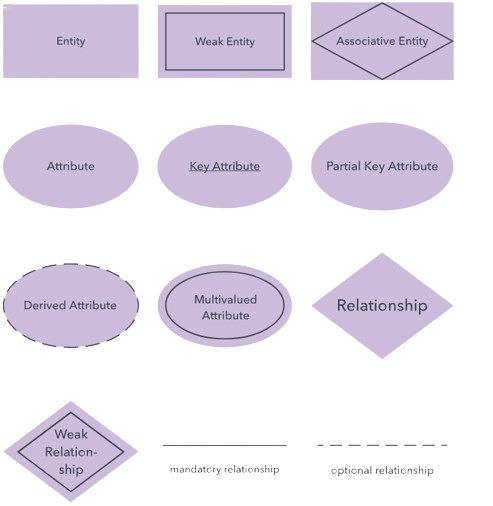
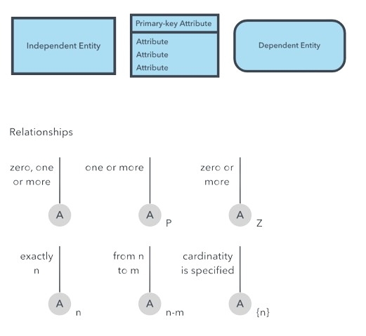

Muuda stiili
ERD sümbolid
On palju sümbolite süsteeme mis on sarnased, aga erinevad mõne spetsiifilise viisiga.
Chen stiil

Crow’s Foot/Martin/Infotehnika stiil
Bachman stiil
IDEF1X stiil

Barker stiil